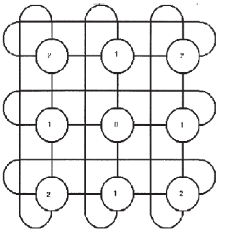
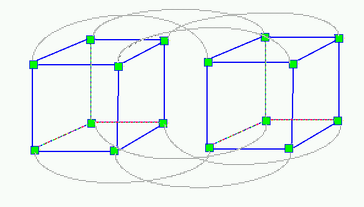
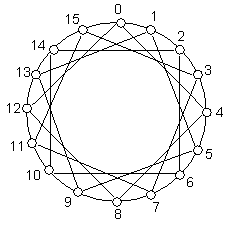

Torus Network |
Hypercube Network |
Chordal Network |
|||
| A torus Network in a type of mesh network that has wrap around edges. These wrap around edges helps the most distant processors to communication within 2 hops. | A hypercube network is one that in constructed recursively. An n-dimensional hypercube is one that is made up of 2 n-1 dimensional hypercubes. The recursive function continuse till we reach n=0 which is a single node. | Chordal are cycle networks that have extra links called chords. These chords help reduce the diameter of the network. | |||
|  |  |  | |||
Instructions to use the Simulator |
|||||
Reliability Calculation |
Routing Algorithm |
||||